0. 課程資訊與教材
| 課程名稱 | 場次一「打通生成式AI任督二脈：Felo AI 篇＋Suno 篇」；場次二「生成式AI時代下，那些教授沒告訴您的話（SEM＋Elicit 工具介紹）」 |
|---|---|
| 頻道 | 生成式 AI 應用電台・晨學講堂 |
| 直播日期 | 2025/12/13（六）場次一 07:00–08:00；場次二 08:30–09:30 |
| 教材 | 場次二有本機簡報「用曼陀羅九宮格學統計(SPSS基礎操作).pptx」（29 頁）＋「Elicit_學術研究的AI助手.pptx」；場次一無獨立簡報，以錄影為主 |
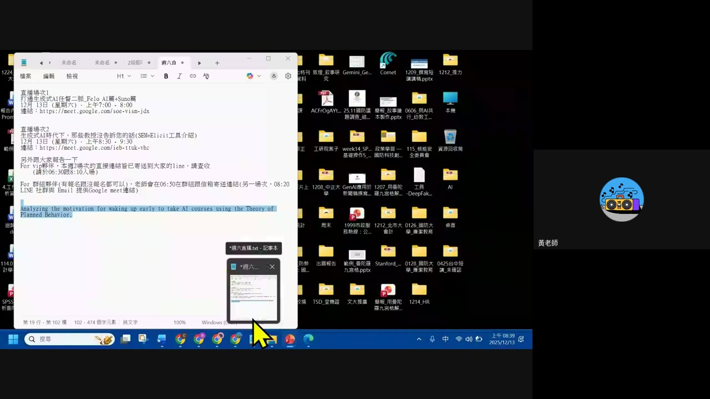
💡 站上集數用「EP2」統一收錄這天的兩場直播；本頁依照實際播出順序先講 Felo AI×Suno（場次一），再講 SEM＋Elicit（場次二）。
1. Felo AI：自訂指令與角色模板
畫面實錄（10:30）＋逐字稿片段（10:48）：「如果你不想要讓 Felo 的模型去借用……」（後段語音辨識不清）。
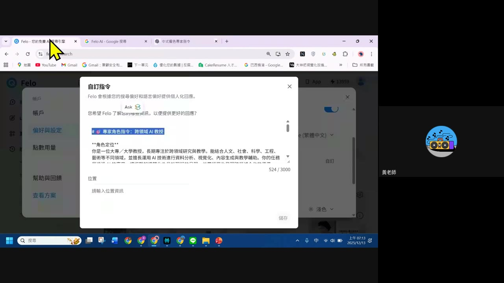
- Felo 支援把常用的角色設定／回答風格存成自訂指令，之後每次搜尋都會套用。
- 側欄可見「偏好與設定」「點數用量」等帳號管理項目。
2. Felo 搜尋代理：智慧型 vs 多步驟
畫面實錄（23:57）：「打造個人專屬搜尋代理」建立畫面。
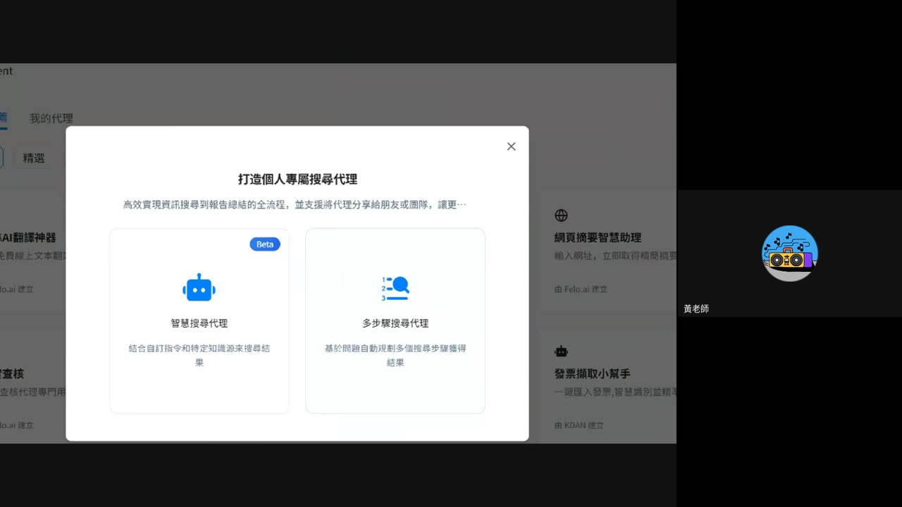
| 代理類型 | 用途 |
|---|---|
| 智慧搜尋代理（Beta） | 結合自訂指令和特定知識來源來搜尋結果，適合固定領域、固定角色的重複查詢 |
| 多步驟搜尋代理 | 基於問題自動規劃多個搜尋步驟獲得結果，適合需要拆解成好幾步才能回答的複雜問題 |
3. LiveDoc：把搜尋結果變成完整報告／圖文頁面
畫面實錄兩則示範。
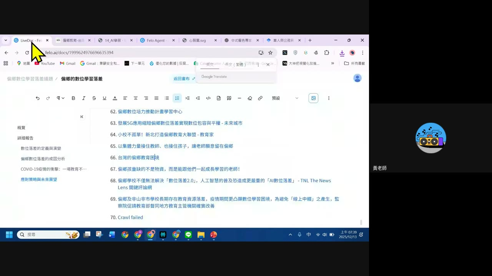
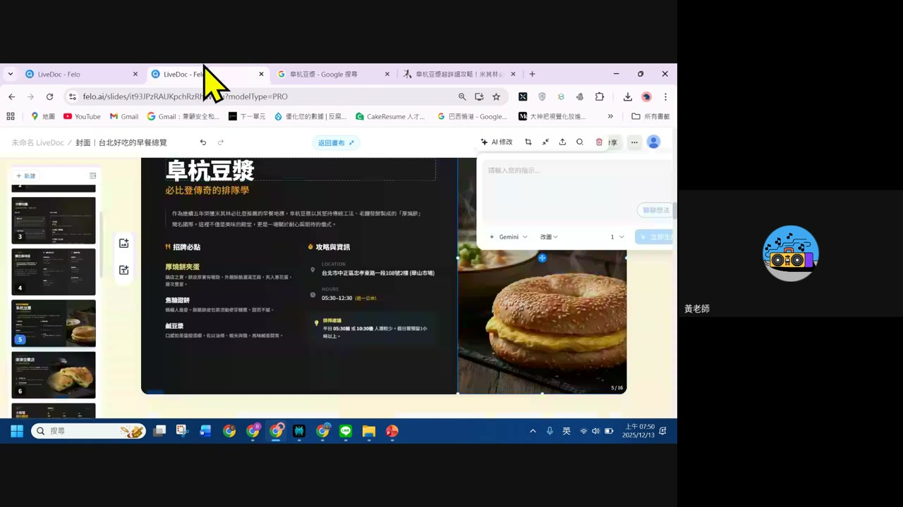
✅ 逐字稿（36:50）：「他幾乎都是從網路上的資料」——LiveDoc 的內容基礎是即時網路搜尋，並非憑空生成。
4. Suno：AI 譜曲歌詞示範
逐字稿原音（52:57–60:37）＋畫面實錄（60:23）。
「有一些好用的功能，你在寫歌曲的時候，我們就直接進入他進階版的做法，想做的歌詞……沒有付費也可以……一首歌的組招，包括前奏、主歌、導歌、副歌、橋段……鼓點的……他會進入到一個空間……他有分享的功能，Share，可以 Copy 連結。」
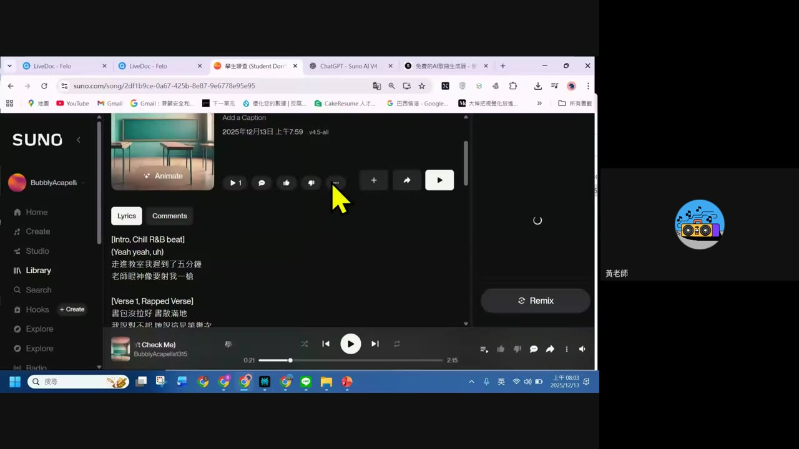
- 免費版可用：不用付費就能生成完整歌曲。
- 歌曲結構化：Intro／Verse／Chorus／Bridge 等段落標記清楚，AI 依段落套用不同曲風（如示範中的 Chill R&B beat）。
- 可分享：生成後有 Share／Copy link 功能，方便直接傳給別人聽。
5. 用九宮格學統計：SEM 核心概念
畫面實錄：簡報「用曼陀羅九宮格學統計(SPSS基礎操作)」封面與內頁。
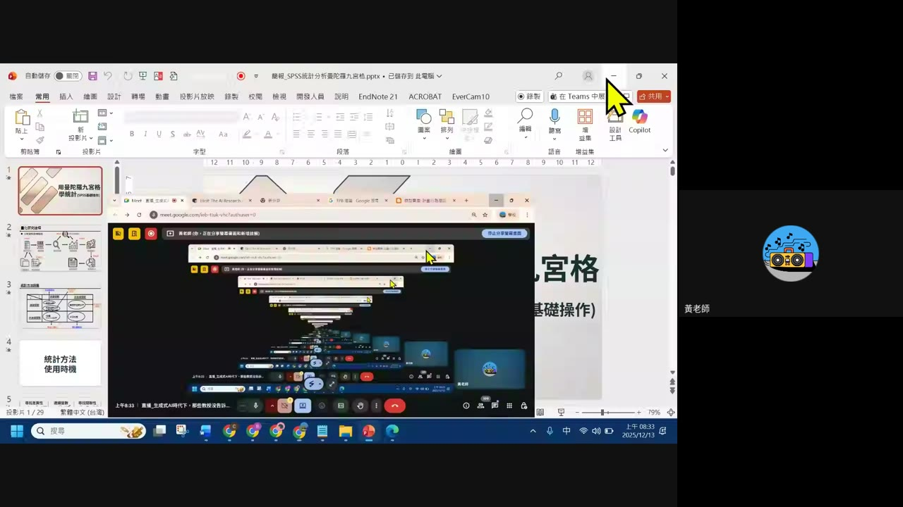
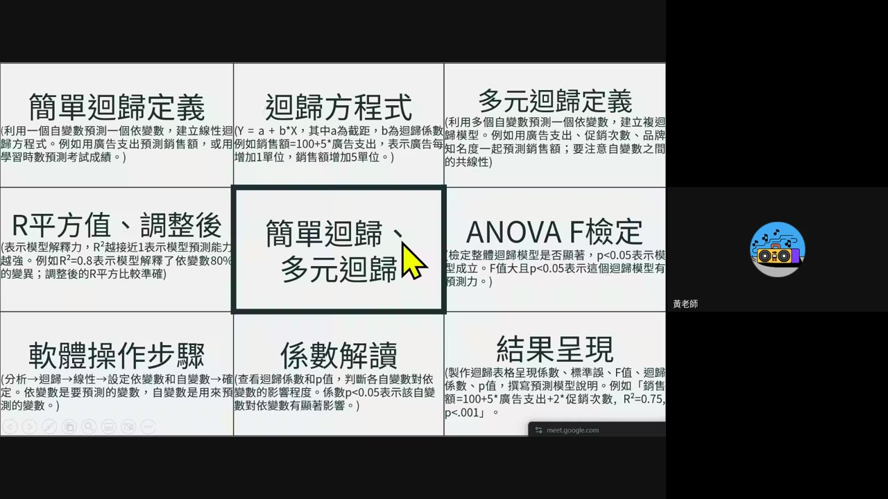
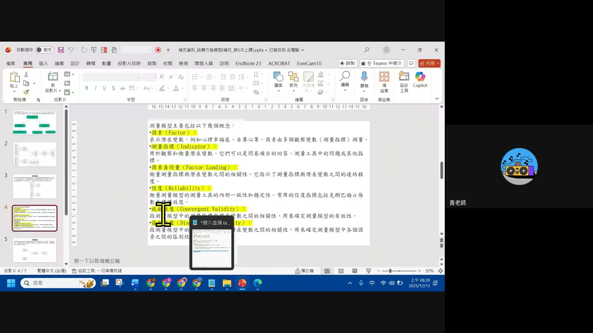
⚠️ 誠實聲明：本集 Drive 資料夾內另附一份不同日期（2026/02）建立的補充 PDF／簡報「AI 素養＝未來競爭力？美國最新政策釋出」（美國勞工部 AI Literacy Framework），與這場錄影日期（2025/12）不同，判斷為另外補充的閱讀資料，非本集錄影當場教授的內容，故不列入本節課堂實錄，僅在第 9 節資料來源中註記其存在。
6. Elicit：五大核心功能與研究報告示範
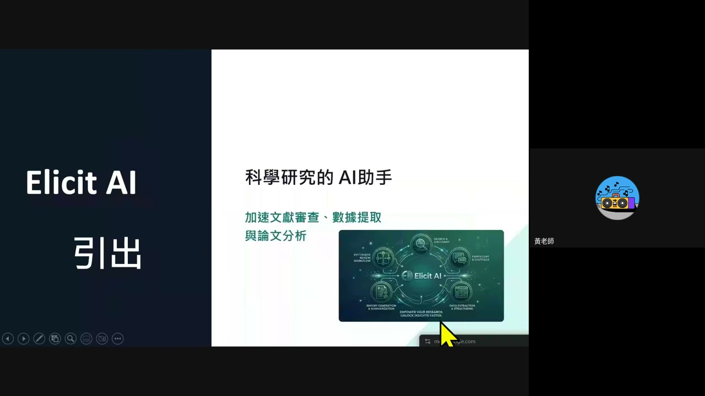
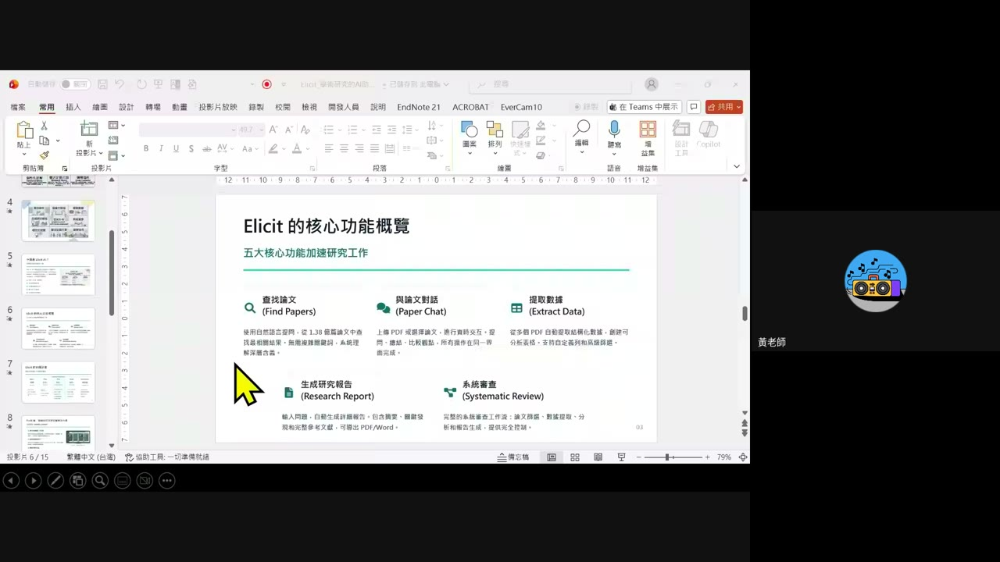
現場示範：用 TPB 理論分析「為什麼要早起上 AI 課」
示範研究問題來自課程排播筆記：「Analyzing the motivation for waking up early to take AI courses using the Theory of Planned Behavior.」講者先 Google 搜尋 TPB（計畫行為理論）模型圖確認理論架構，再用 Elicit 實際查找相關文獻。
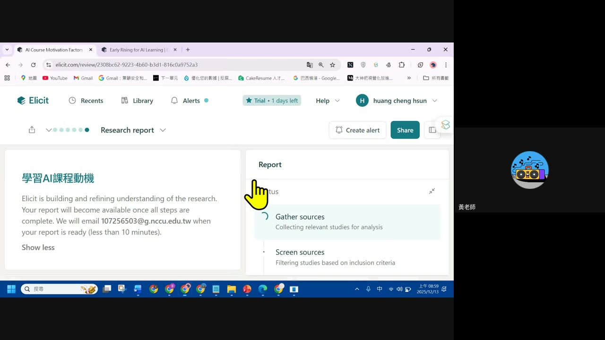
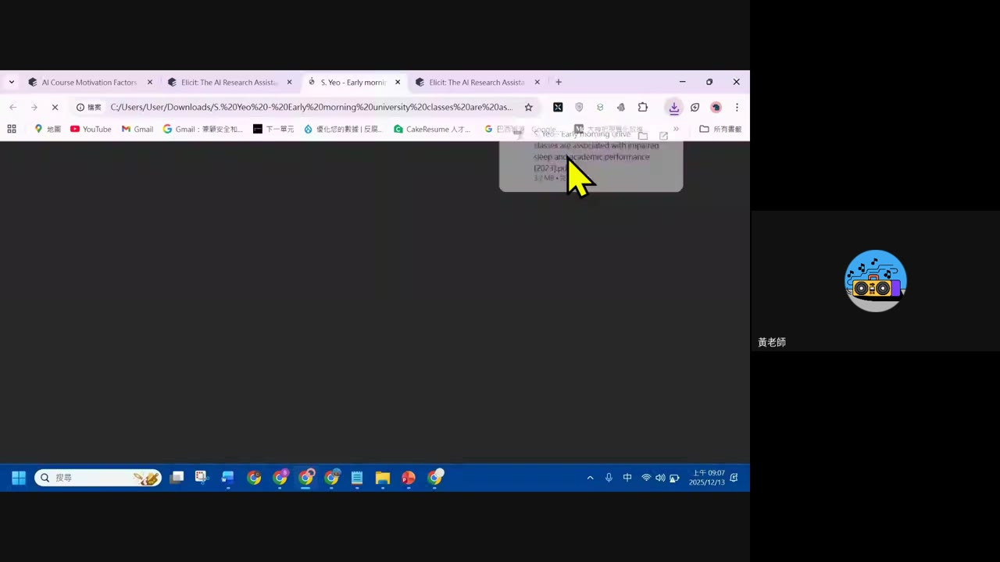
7. 現場問答
畫面實錄（42:28）：Elicit 對話視窗顯示觀眾提問。
- 觀眾提問：「試用 14 天後，就要付費嗎？那還能繼續用嗎？就 PRO 降級成免費版？」
- 觀眾提問：「請問老師能夠中文提問嗎？」
💡 這兩個問題點出 Elicit 新手最常見的疑慮：試用期後的收費方式與是否支援中文提問——這些屬於工具當下的方案細節，實際情況請以 Elicit 官方頁面當時公告為準。
8. 重點整理
場次一：Felo AI × Suno
- Felo 自訂指令：把常用角色設定存成模板，之後搜尋自動套用。
- 兩種搜尋代理：智慧搜尋代理（固定領域＋知識來源）vs 多步驟搜尋代理（自動拆解複雜問題）。
- LiveDoc：把搜尋結果整理成附完整來源的研究報告，或圖文並茂的介紹頁面，且可用 AI 修改面板持續調整。
- Suno：免費就能生成結構化歌曲（Intro／Verse／Chorus），並附分享連結功能。
場次二：SEM × Elicit
- 九宮格教學法延伸：EP1 用在 NotebookLM，這集用在統計／SEM，同一套思考工具可套用到不同專業主題。
- SEM 六個核心概念：因素、測量指標、因素負荷量、信度、收斂效度、區別效度。
- Elicit 五大功能：查找論文、與論文對話、提取數據、生成研究報告、系統審查。
- 從理論到文獻的完整示範：TPB 理論 → Google 圖片確認模型 → Elicit 查找真實相關論文。
9. 資料來源與製作說明
- 原始教材：場次一「Felo AI篇+Suno篇」錄影回放（Drive 檔案時長顯示 8 小時，經比對逐字稿與畫面確認實際課程內容集中在前 65 分鐘，其後為直播結束未關閉錄影所致的長時間空白畫面，未作為教材內容處理）；場次二「SEM+Elicit工具介紹」錄影回放（42.6 分鐘），另有本機簡報「用曼陀羅九宮格學統計(SPSS基礎操作).pptx」與「Elicit_學術研究的AI助手.pptx」。以上檔案均為 anyone-reader 權限、公開可下載。
- 製作方式：下載完整錄影 → faster-whisper（small 模型）產出逐字稿 → 場景變化偵測抽取畫面關鍵幀 → 親眼逐張判讀畫面內容（含九宮格與 Elicit 功能表原文照錄）→ 對照逐字稿整理成本頁章節。
- 另有一份不列入本集實錄的補充文件：EP2.1 資料夾內有一份 2026/02 建立的 PDF／簡報「AI 素養＝未來競爭力？美國最新政策釋出」，建立時間與本集錄影（2025/12）不同，判斷為之後另外加入的補充閱讀，非本集直播當場教授內容，故不納入課堂實錄章節，特此註明避免誤植。
- 誠實聲明：場次一 24:31–32:26 語音因收音問題出現重複亂碼，無法還原原話，該段以畫面截圖為準；未能辨識的口語細節不補述、不杜撰。
- 介面參考：版型沿用本站 EP29–EP46 課堂筆記的乾淨白底編輯風格。